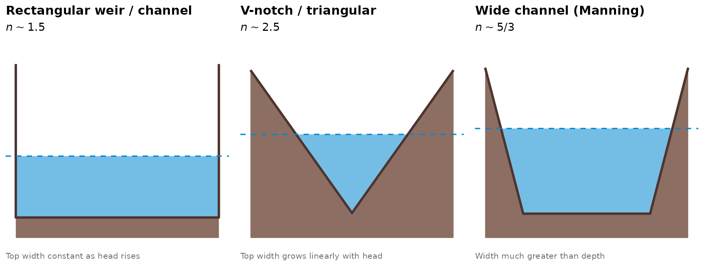
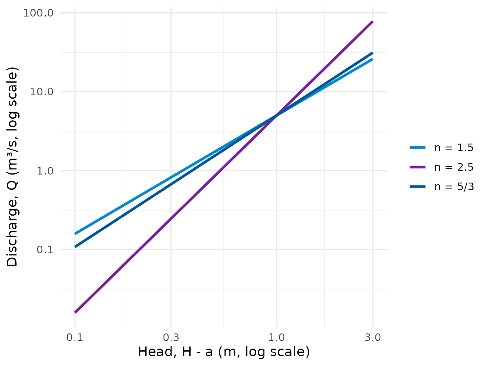
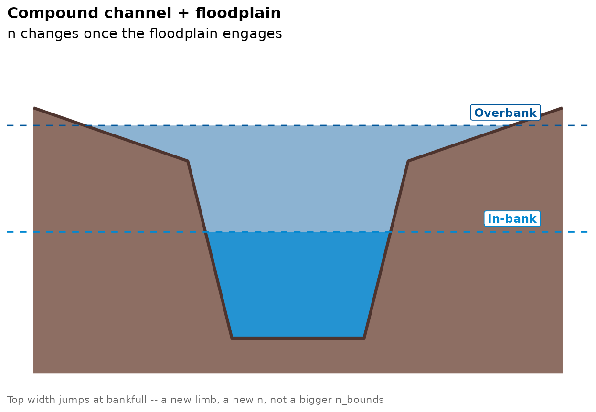

Choosing n_bounds: A Cross-Section Guide
Jonathan Payne, Environment Agency Flood Forecasting
August 2026
Source:vignettes/n_bounds_guide.Rmd
n_bounds_guide.Rmdvignette("non_standard_optimisation") covers
n_bounds mechanically: what argument to pass, and a
before/after comparison of the fit it produces. It doesn’t say how to
arrive at the numbers you pass it. This vignette is the companion piece
– given a channel, or a cross-section survey of one, what exponent
should you expect, and what does that look like. Read
non_standard_optimisation.Rmd for the API; read this one
for where its c(1.4, 1.6) actually comes from.
The three canonical controls
vignette("rating_curves_guide")’s “Why a power law”
section states the theory in one paragraph: a rectangular weir or
channel control gives an exponent around 1.5; a V-notch or triangular
control, around 2.5; Manning’s equation for a wide channel, around 5/3
(Herschy 2009; Rantz et al. 1982). What those three controls actually
look like, side by side:
bed_colour <- "#8d6e63"
water_colour <- "#0288d1"
line_colour <- "#4e342e"
# Clip a bed polyline to the part at or below `level`, inserting an exact
# crossing point at every wall/bank so the wetted polygon closes cleanly
# even where the bed has a vertical segment (a repeated x value, which
# stats::approx() can't interpolate through).
clip_below <- function(bed_dt, level) {
n <- nrow(bed_dt)
pts <- vector("list", 0)
wet <- bed_dt$elevation_m <= level
if (wet[1]) pts[[length(pts) + 1]] <- c(bed_dt$distance_m[1], bed_dt$elevation_m[1])
for (i in seq_len(n - 1)) {
x1 <- bed_dt$distance_m[i]; y1 <- bed_dt$elevation_m[i]
x2 <- bed_dt$distance_m[i + 1]; y2 <- bed_dt$elevation_m[i + 1]
if (wet[i] != wet[i + 1]) {
xc <- if (x1 == x2) x1 else x1 + (level - y1) / (y2 - y1) * (x2 - x1)
pts[[length(pts) + 1]] <- c(xc, level)
}
if (wet[i + 1]) pts[[length(pts) + 1]] <- c(x2, y2)
}
setNames(as.data.table(do.call(rbind, pts)), c("distance_m", "elevation_m"))
}
# An idealised cross-section: bed outline, a shaded wetted area up to one
# water level, and a caption naming the control and its theoretical n.
xs_diagram <- function(bed_dt, water_level, title, n_label, note, baseline_drop = 0.4) {
baseline <- min(bed_dt$elevation_m) - baseline_drop
wet_dt <- clip_below(bed_dt, water_level)
wet_poly <- rbindlist(list(
wet_dt,
data.table(distance_m = rev(wet_dt$distance_m), elevation_m = water_level)
))
ground_poly <- data.table(
distance_m = c(bed_dt$distance_m, rev(bed_dt$distance_m)),
elevation_m = c(bed_dt$elevation_m, rep(baseline, nrow(bed_dt)))
)
ggplot() +
geom_polygon(data = ground_poly, aes(distance_m, elevation_m), fill = bed_colour, colour = NA) +
geom_polygon(data = wet_poly, aes(distance_m, elevation_m), fill = water_colour, alpha = 0.55) +
geom_line(data = bed_dt, aes(distance_m, elevation_m), colour = line_colour, linewidth = 1.1) +
geom_hline(yintercept = water_level, colour = water_colour, linetype = "dashed", linewidth = 0.6) +
labs(title = title, subtitle = bquote(italic(n) ~ "~" ~ .(n_label)), caption = note, x = NULL, y = NULL) +
coord_cartesian(ylim = c(baseline, max(bed_dt$elevation_m) + 0.3)) +
theme_minimal(base_size = 11) +
theme(
plot.title = element_text(face = "bold", size = 12),
plot.subtitle = element_text(size = 11),
plot.caption = element_text(size = 8, colour = "grey40", hjust = 0),
axis.text = element_blank(), axis.ticks = element_blank(),
panel.grid = element_blank()
)
}
rect_bed <- data.table(distance_m = c(-4, -4, 4, 4), elevation_m = c(3, 0, 0, 3))
p_rect <- xs_diagram(rect_bed, water_level = 1.2, "Rectangular weir / channel",
"1.5", "Top width constant as head rises")
vnotch_bed <- data.table(distance_m = c(-2.2, 0, 2.2), elevation_m = c(2.0, 0, 2.0))
p_vnotch <- xs_diagram(vnotch_bed, water_level = 1.1, "V-notch / triangular",
"2.5", "Top width grows linearly with head", baseline_drop = 0.35)
wide_bed <- data.table(distance_m = c(-8, -5, 5, 8), elevation_m = c(2.4, 0, 0, 2.4))
p_wide <- xs_diagram(wide_bed, water_level = 1.4, "Wide channel (Manning)",
"5/3", "Width much greater than depth")
grid.arrange(p_rect, p_vnotch, p_wide, ncol = 3)
Read the shapes as top-width behaviour, since that’s what actually
drives the exponent: a rectangular section presents the same top width
at every head, so discharge grows only as fast as velocity does, close
to head^1.5. A V-notch’s top width grows linearly with head, so
discharge picks up an extra factor of head on top of that, close to
head^2.5. A wide channel sits between the two – width barely changes as
depth increases a little, so hydraulic radius tracks depth almost
directly, and Manning’s equation gives roughly head^(5/3). None of this
is a reach.rate model; it’s what
rate_optimise()’s unconstrained fit is implicitly competing
against when gaugings are too sparse to pin the exponent down on their
own.
Why the shape sets the exponent
is a straight line on log-log axes, with slope
(rating_curves_guide.Rmd states this; here it is
drawn):
H <- seq(0.1, 3, by = 0.02)
C <- 5
curves_dt <- rbindlist(lapply(c(1.5, 5 / 3, 2.5), function(n) {
data.table(H = H, Q = C * H^n, n = sprintf("n = %s", if (n == 5 / 3) "5/3" else n))
}))
ggplot(curves_dt, aes(H, Q, colour = n)) +
geom_line(linewidth = 1.1) +
scale_x_log10() +
scale_y_log10() +
scale_colour_manual(values = c("n = 1.5" = "#0288d1", "n = 5/3" = "#01579b", "n = 2.5" = "#7b1fa2")) +
labs(x = "Head, H - a (m, log scale)", y = "Discharge, Q (m³/s, log scale)", colour = NULL) +
theme_minimal(base_size = 12)
The three lines cross where the curves happen to agree
(H = 1 here, an artefact of sharing one C, not
a general property) and fan out either side of it – the steeper the
line, the larger n, exactly matching which cross-section
above is steepest-sided in its top-width growth. This is the number
n_bounds = c(lower, upper) constrains directly: not the
curve’s height (C absorbs that), its steepness.
A compound channel: the case that actually needs separate limbs
Real stations rarely stay one shape across their whole range. A channel with a floodplain shelf looks like one control at low flow and a completely different one once the river tops its banks:
compound_bed <- data.table(
distance_m = c(-12, -5, -3, 3, 5, 12),
elevation_m = c(2.6, 2.0, 0, 0, 2.0, 2.6)
)
baseline <- min(compound_bed$elevation_m) - 0.4
levels_dt <- data.table(
label = c("In-bank", "Overbank"), elevation_m = c(1.2, 2.4),
colour = c("#0288d1", "#01579b")
)
wet_inbank <- clip_below(compound_bed, levels_dt$elevation_m[1])
wet_inbank_poly <- rbindlist(list(
wet_inbank,
data.table(distance_m = rev(wet_inbank$distance_m), elevation_m = levels_dt$elevation_m[1])
))
wet_overbank <- clip_below(compound_bed, levels_dt$elevation_m[2])
wet_overbank_poly <- rbindlist(list(
wet_overbank,
data.table(distance_m = rev(wet_overbank$distance_m), elevation_m = levels_dt$elevation_m[2])
))
ground_poly <- data.table(
distance_m = c(compound_bed$distance_m, rev(compound_bed$distance_m)),
elevation_m = c(compound_bed$elevation_m, rep(baseline, nrow(compound_bed)))
)
ggplot() +
geom_polygon(data = ground_poly, aes(distance_m, elevation_m), fill = bed_colour, colour = NA) +
geom_polygon(data = wet_overbank_poly, aes(distance_m, elevation_m), fill = levels_dt$colour[2], alpha = 0.45) +
geom_polygon(data = wet_inbank_poly, aes(distance_m, elevation_m), fill = levels_dt$colour[1], alpha = 0.75) +
geom_line(data = compound_bed, aes(distance_m, elevation_m), colour = line_colour, linewidth = 1.1) +
geom_hline(data = levels_dt, aes(yintercept = elevation_m, colour = label), linetype = "dashed", linewidth = 0.6) +
geom_label(
data = levels_dt, aes(x = 11, y = elevation_m, label = label, colour = label),
hjust = 1, vjust = -0.35, size = 3.2, fontface = "bold", label.size = 0.3, fill = "white"
) +
scale_colour_manual(values = setNames(levels_dt$colour, levels_dt$label), guide = "none") +
labs(
title = "Compound channel + floodplain",
subtitle = "n changes once the floodplain engages",
caption = "Top width jumps at bankfull -- a new limb, a new n, not a bigger n_bounds",
x = NULL, y = NULL
) +
coord_cartesian(ylim = c(baseline, 3.1)) +
theme_minimal(base_size = 11) +
theme(
plot.title = element_text(face = "bold", size = 12),
plot.subtitle = element_text(size = 11),
plot.caption = element_text(size = 8, colour = "grey40", hjust = 0),
axis.text = element_blank(), axis.ticks = element_blank(),
panel.grid = element_blank()
)
#> Warning: The `label.size` argument of `geom_label()` is deprecated as of ggplot2 3.5.0.
#> ℹ Please use the `linewidth` argument instead.
#> This warning is displayed once per session.
#> Call `lifecycle::last_lifecycle_warnings()` to see where this warning was
#> generated.
In-bank, the top width barely changes with stage – a narrow,
near-vertical- sided channel, closer to the rectangular family. Once
stage crosses the bankfull shoulder, top width jumps abruptly onto the
wide floodplain, and the control the exponent should track jumps with
it. This is exactly rating_curves_guide.Rmd’s “Why ratings
have limbs” argument, seen from the geometry side: it is also a real
constraint on n_bounds itself. Reading
R/rate_optimise.R’s fitting loop, n_bounds is
one c(lower, upper) pair applied to every limb
inside a single rate_optimise(..., control = ...) call –
there’s no per-limb variant. A compound channel like this one needs two
different bounds for its two regimes, which means two separate
rate_optimise() calls (one per limb’s data), the same
pattern vignette("rating_curve_walkthrough")’s top-limb
section already uses – not one call with a single n_bounds
wide enough to straddle both controls, which would fail to constrain
either one usefully.
Choosing bounds in practice
| Control | Typical literature n
|
A reasonable starting n_bounds
|
|---|---|---|
| Rectangular weir / channel | ~1.5 | c(1.4, 1.6) |
| Wide channel (Manning) | ~5/3 (1.67) | c(1.5, 1.8) |
| V-notch / triangular | ~2.5 | c(2.3, 2.7) |
A few practical notes that don’t fit neatly in the table:
-
Anchor near the literature value, don’t pin it.
c(1.4, 1.6)around a expected 1.5 leaves the fit some room;c(1.5, 1.5)forces the exponent outright and should be reserved for when you are confident enough to fix it, not as a default width. -
Widen or drop the bound as gaugings accumulate.
n_boundsearns its keep exactly wherenon_standard_optimisation.Rmdintroduces it: sparse, high-stage data with nothing else to anchor the shape. Once a limb has enough of its own gaugings spanning its range, the unconstrained fit is usually trustworthy on its own, and a stale bound just risks quietly overriding what the data would otherwise show. -
A hard constraint, not a prior.
n_boundsis a box constraint on the optimiser, not a Bayesian prior the data can update – seenon_standard_optimisation.Rmd’s “What this is not” section (and issue #11) for the distinction. Use it when you’re confident enough in the control type to rule other exponents out, not as a softer nudge. If you need the real thing today rather than waiting on #11,bdrc(Hrafnkelsson et al. 2022) already implements a Bayesian power-law fit in R, with priors on the exponent that data can genuinely update. -
Compound geometry needs compound handling, per the
previous section – one
n_boundsper control, onerate_optimise()call per control.
A worked example, tied back to the diagram
non_standard_optimisation.Rmd’s own bounds demonstration
already uses a true_n = 1.5 station – the rectangular-weir
shape from this vignette’s first section, not a new one:
set.seed(23)
stage_dense_m <- seq(0.2, 2.5, by = 0.03)
stage_sparse_m <- c(2.7, 2.9, 3.1, 3.3)
stage_m <- c(stage_dense_m, stage_sparse_m)
true_C <- 5; true_a <- 0; true_n <- 1.5
discharge_true_cms <- true_C * (stage_m - true_a)^true_n
discharge_cms <- discharge_true_cms * exp(rnorm(length(stage_m), sd = 0.1))
fit_unconstrained <- rate_optimise(discharge_cms, stage_m)
fit_bounded <- rate_optimise(discharge_cms, stage_m, n_bounds = c(1.4, 1.6))
rbind(
data.table(fit = "unconstrained", fit_unconstrained@limbs[, .(C, a, n, rmse_cms, r_squared)]),
data.table(fit = "n_bounds = c(1.4, 1.6)", fit_bounded@limbs[, .(C, a, n, rmse_cms, r_squared)])
)
#> fit C a n rmse_cms r_squared
#> <char> <num> <num> <num> <num> <num>
#> 1: unconstrained 5.767712 0.08480926 1.374085 1.093207 0.9732990
#> 2: n_bounds = c(1.4, 1.6) 5.558503 0.05907584 1.400000 1.093733 0.9732733The unconstrained n drifts away from the rectangular
control’s expected 1.5, because the handful of gaugings above stage 2.5
aren’t enough on their own to hold it there.
n_bounds = c(1.4, 1.6) – the row in this vignette’s own
table, chosen directly from that shape’s typical range – holds it to the
range the diagram at the top of this vignette says a rectangular control
should occupy. rmse_cms/r_squared barely move:
the data cannot distinguish the two shapes here, which is exactly why
the physical anchor matters.
Where to go next
-
vignette("non_standard_optimisation")– the mechanical demonstration ofn_bounds(andobjective = "relative", and thegauging_datetimegroundwork). -
vignette("rating_curves_guide")– “Why a power law” for the full derivation and citations, and “Why ratings have limbs” for the compound-channel argument in prose. -
vignette("rating_curve_walkthrough")–n_boundsused in context, anchoring a real sparse top limb against an extreme gauging.
References
Herschy, R. W. (2009). Streamflow Measurement (3rd ed.). Routledge.
Hrafnkelsson, B., Sigurdarson, H., Rögnvaldsson, S., Jansson, A. Ö., Vias, R. D., & Gardarsson, S. M. (2022). Generalization of the power-law rating curve using hydrodynamic theory and Bayesian hierarchical modeling. Environmetrics, 33(2), e2711.
Rantz, S. E., et al. (1982). Measurement and Computation of Streamflow (Water Supply Paper 2175). U.S. Geological Survey.